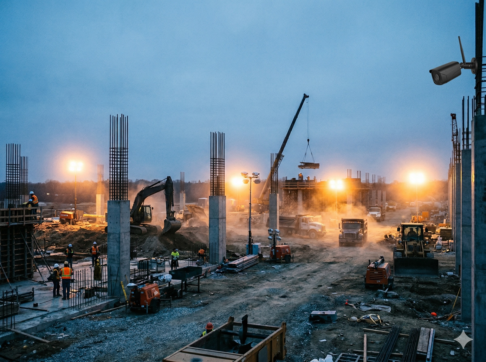
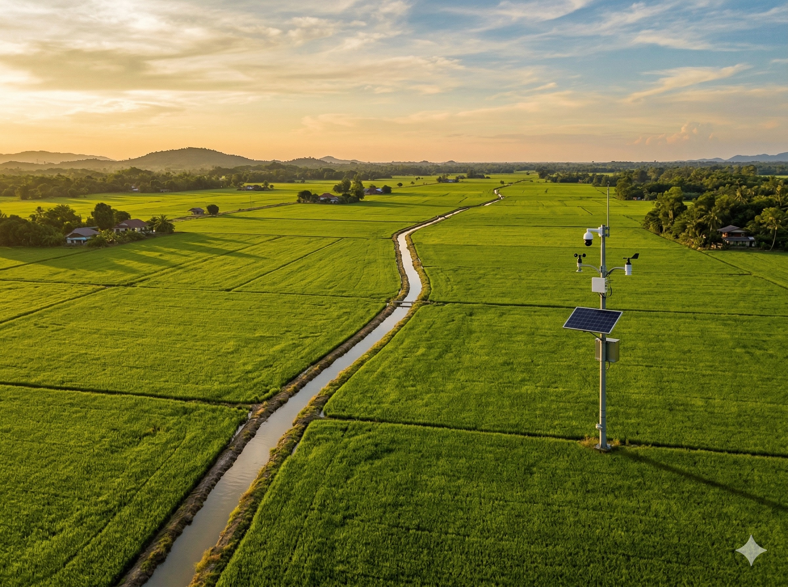
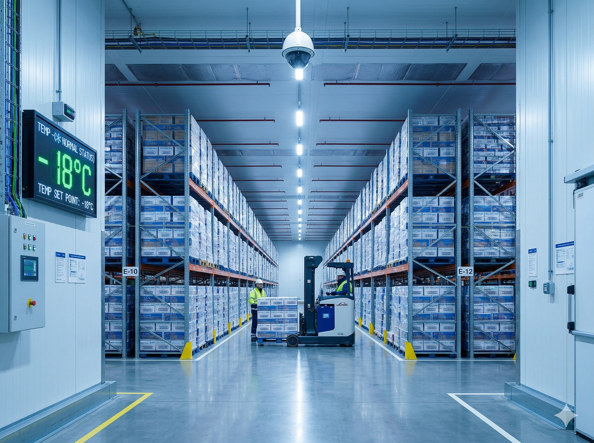
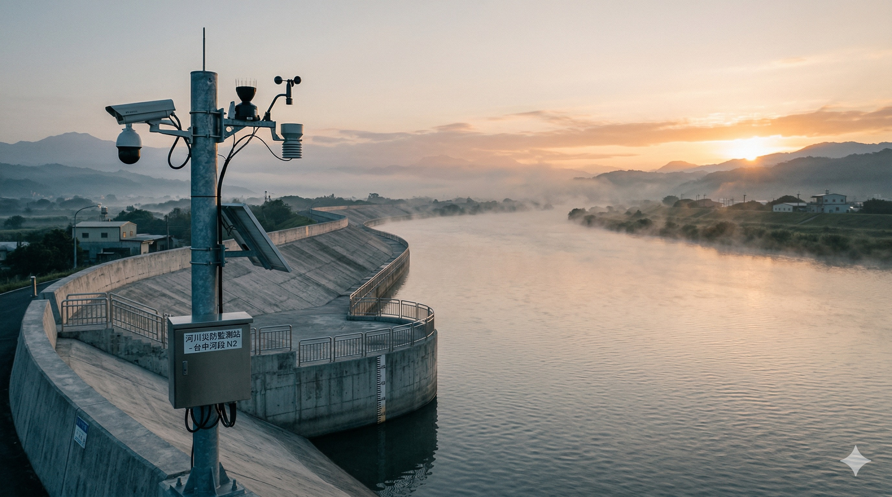
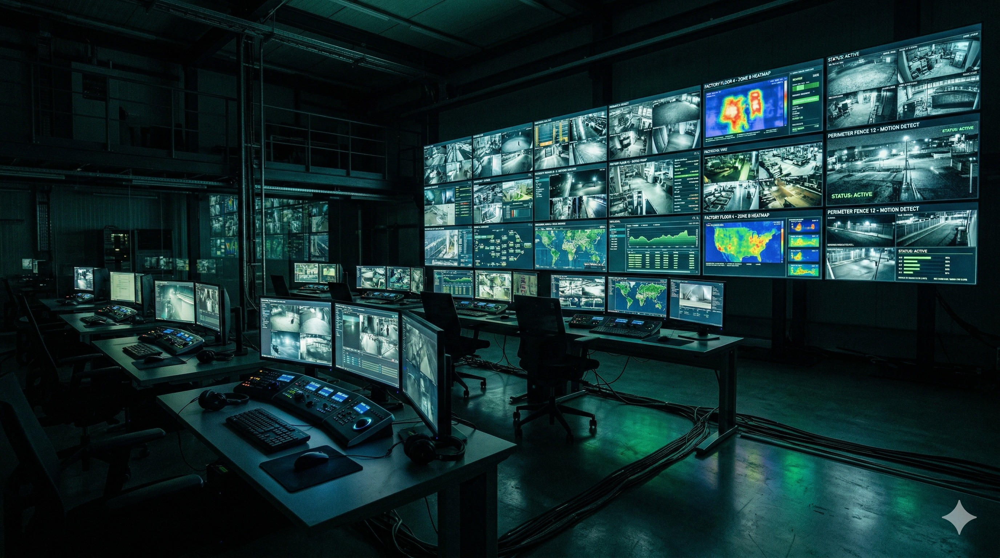
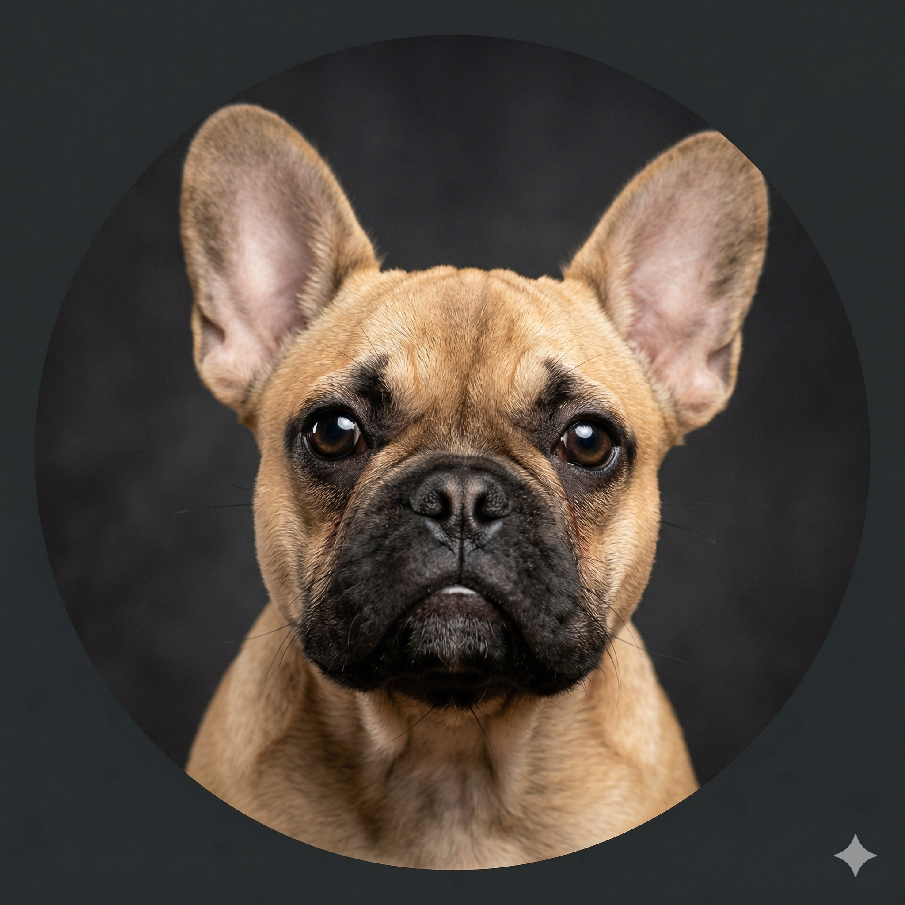
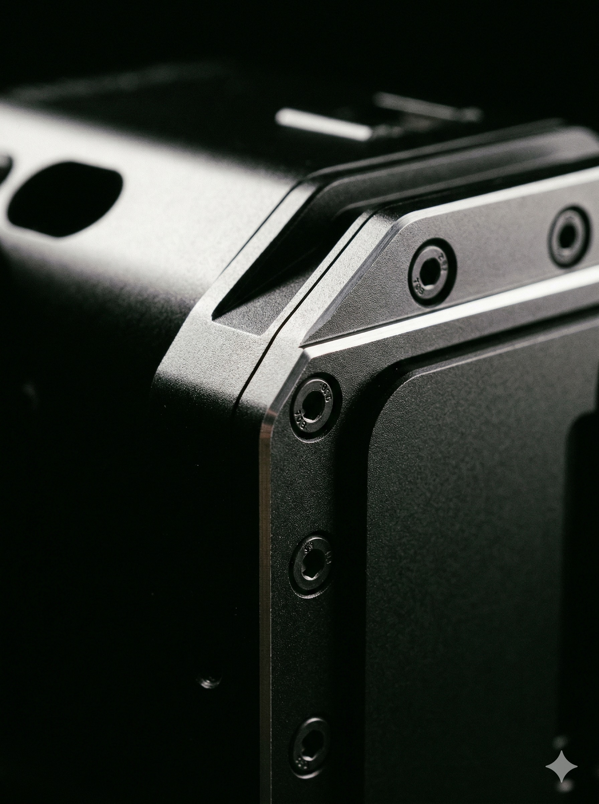
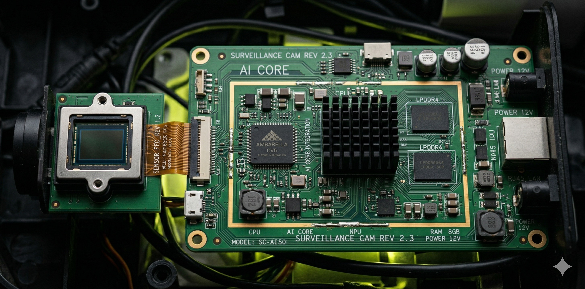
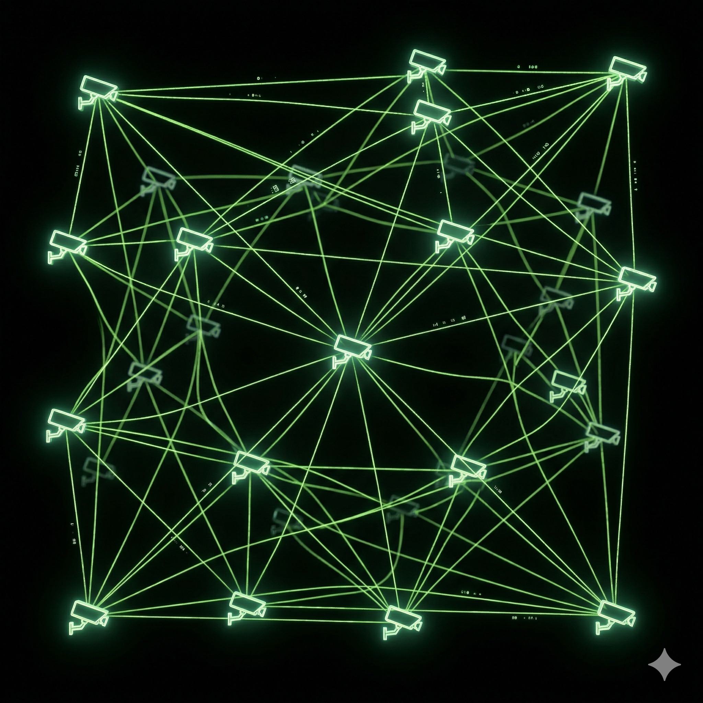
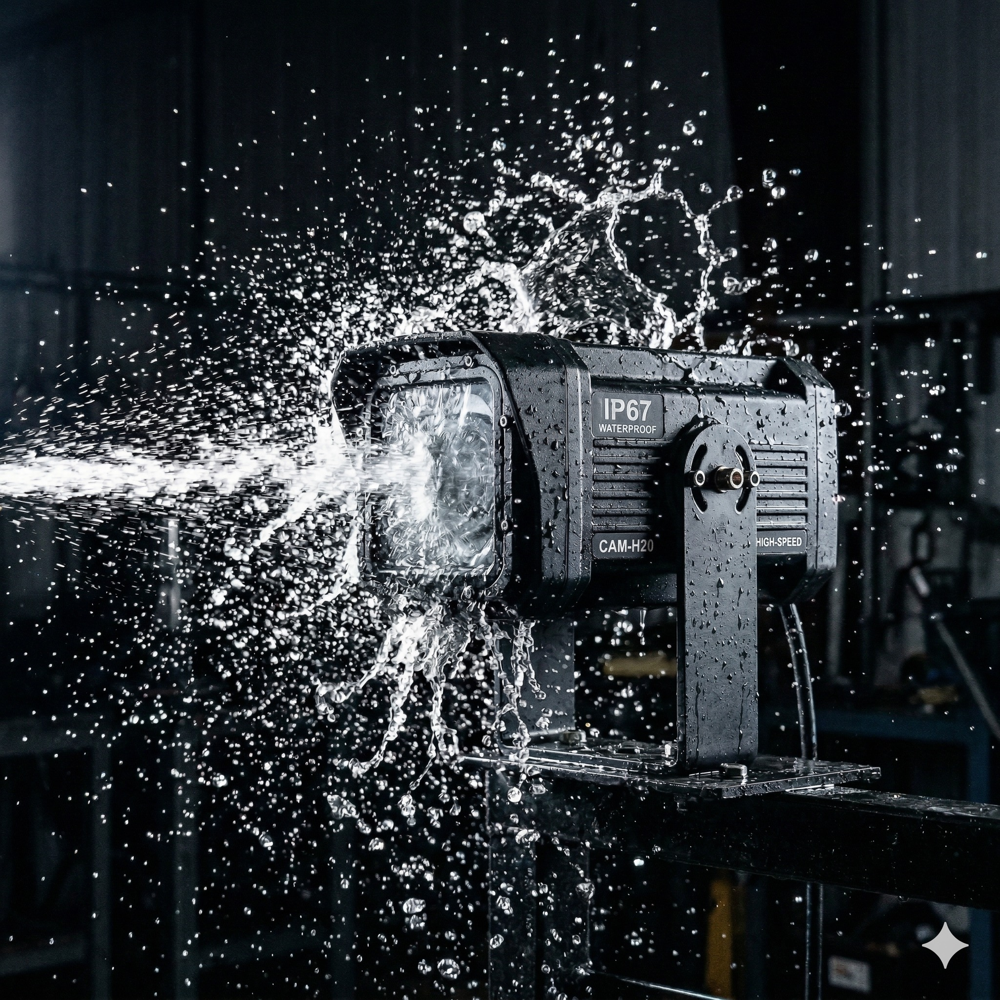

WebRTC リアルタイム映像
WebRTCプロトコルによる超低遅延ライブ配信。現場の「今」を、超低遅延のライブ映像で届ける。遠隔地でも、まるでその場にいるかのような臨場感。
360° 魚眼 De-warp
360°魚眼レンズの歪みをソフトウェアで補正。仮想PTZと分割表示により、1台で広範囲を確認可能にし、死角を低減。
H.265 クラウド常時録画
H.265高圧縮エンコーディングとAWS S3クラウドストレージの融合。24時間365日の常時録画を、通信帯域と運用コストに配慮しながら実現。
World
Cloud
Cameras.
Worldクラウドプラットフォームと完全統合。建設現場から河川監視・防災まで、あらゆる現場の映像をクラウドに常時記録する。
Sentinel X1
クラウド常時録画 // Cloudプラン
Construct B2
建設現場専用 // SIM内蔵モデル
Guardian T1
360° 魚眼 De-warp モデル

建設現場の状況を、
遠隔から把握する
SIM内蔵カメラで工事不要。設置したその日からクラウド常時録画が稼働。夜間の資材盗難防止と施工進捗の遠隔確認を同時に実現します。
- check_circle SIM内蔵 — 電源さえあれば即日稼働
- check_circle 動体検知アラート — 夜間侵入を即座に通知
- check_circle タイムラプス — 施工進捗を自動記録

広大な農地を、
1台で広範囲に見守る
ソーラー給電とLTE通信で、電源もネットもない場所に設置可能。灌漑水路の水位監視や、圃場の生育状況確認をクラウドから24時間体制で。
- check_circle ソーラー給電 — 商用電源不要
- check_circle 気象センサー連動 — 温湿度・風速を同時記録
- check_circle AI動体検知 — 獣害・不審者を即座にアラート

施設全域を広範囲に監視し、
効率的な活用を支援する
360°魚眼カメラのDe-warp機能で、1台で通路全体をカバー。冷凍倉庫から物流センターまで、温度管理が必要な環境でもIP67防水で安心。
- check_circle 360° De-warp — 仮想PTZで死角ゼロ
- check_circle IP67防水 — 冷凍庫・高湿度環境対応
- check_circle 多層権限管理 — 部門ごとに閲覧範囲を制御
Built for the
CONCRETE
Jungle
管理と閲覧の完全分離
World Manager（CMS）とWorld 管理系機能（CMS）と閲覧系機能（VMS）を分離することで、多拠点・多台数環境でも運用しやすい構成としています。
World Manager (CMS)
デバイス登録・権限管理・多層組織構造を一元制御。
World Viewer (VMS)
ライブ映像・録画再生・クリップ切り出しをブラウザ上で完結。

Guarding
THE
FLOW
複数プラン
対応
Cloudプランではクラウド録画、OnlyWatchプランではローカル録画（SDカード等）に対応。
接続性
WebRTC + HLS デュアル
インテリジェンス
動体検知 + クリップ切り出し
B2B OEM ホワイトラベル
マルチテナント対応。パートナー企業のブランドで展開可能。
死角ゼロ。
ダウンタイムゼロ。
WebRTCによる超低遅延ライブ配信と、AWS S3基盤のクラウド常時録画。MediaMTXメディアサーバーが映像の取得・変換・配信をシームレスに処理し、高い可用性を目指した構成。
0%
クラウド可用性
0ms
WebRTC レイテンシ

温度: 22°C | 湿度: 45%
ステータス: AI_SCAN_ACTIVE
「家に誰もいない隙を狙って飼料を盗み食いしようとすると、98.7%の確率で捕まる。このカメラ、マジで死角がない。諦めてソファで寝ることにした。」

テンプラ
フレンチブルドッグ 飼料セキュリティ検証担当



